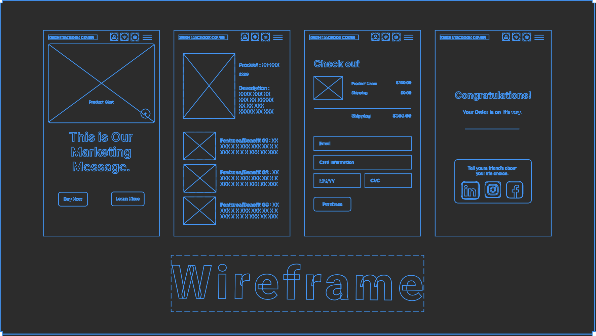
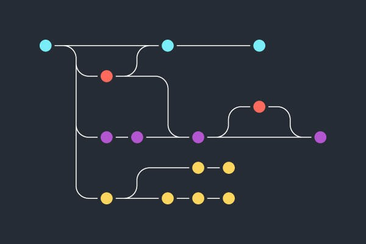

What is a README File and why it is important
A README file is a text file that serves as a guide for users of a project,
providing essential information about its purpose, installation, and usage.
It is typically the first document a user encounters when accessing a project,
making it crucial for effective communication and collaboration.
Read more

What is a Wireframing
Wireframes are basic blueprints that help teams align on requirements,
keeping UX design conversations focused and constructive.
Think of your wireframe as the skeleton of your app, website, or other final product.
Read more

What is a Git Branch
A branch in Git is simply a lightweight movable pointer to one of these commits.
The default branch name in Git is master.
As you start making commits, you're given a master branch that points to the last commit you made.
Every time you commit, the master branch pointer moves forward automatically.
Read more